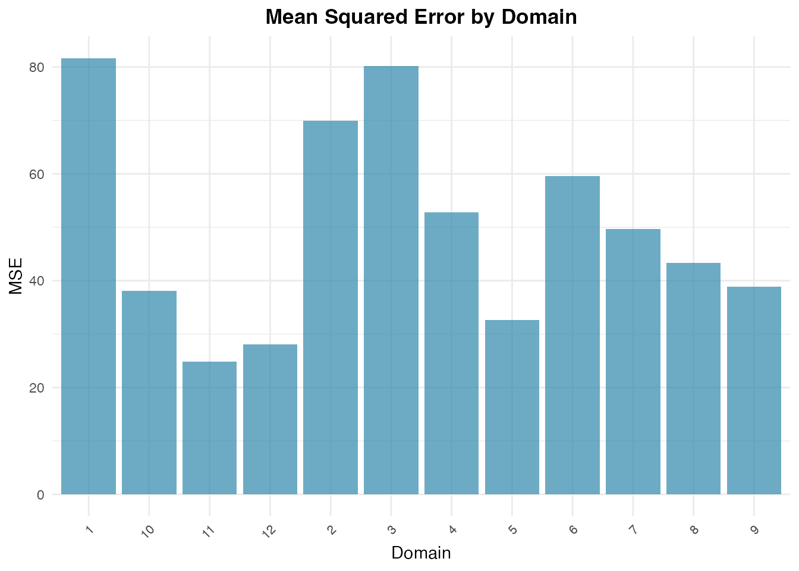
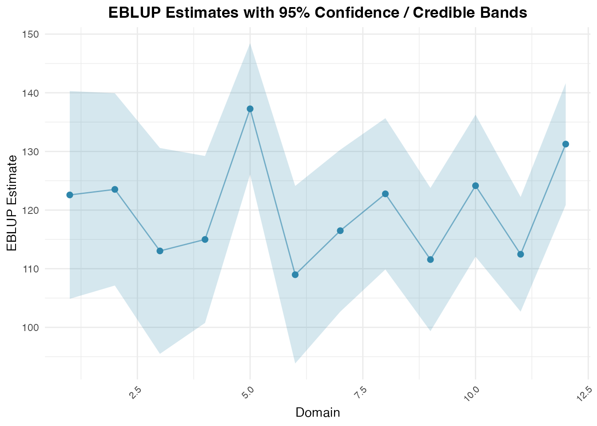

Unit-Level Estimation with Battese-Harter-Fuller
Source:vignettes/unit-level-bhf.Rmd
unit-level-bhf.RmdOverview
Unlike area-level models that aggregate data prior to modeling, unit-level models operate directly on individual survey unit records (e.g., households, farms, or persons) while linking them to population auxiliary aggregates (e.g., census means or satellite imagery).
The fastsae package implements the nested error
regression model of Battese, Harter, and Fuller (1988) via
eblup_bhf(), providing fast estimation and parallel
parametric bootstrap MSE.
Model Formulation
For individual unit () in small area ():
where: - is the area-specific random effect. - is the unit-level error variance. - and are mutually independent.
The small area population mean is estimated by:
where: - is the known population mean vector of auxiliary variables for domain . - and are the sample means for domain . - is the shrinkage ratio.
Step-by-Step Example
1. Data Preparation
We use the classic cornsoybean dataset, reporting corn
crop hectares per segment in 12 Iowa counties:
library(fastsae)
data("cornsoybean")
data("cornsoybeanmeans")
# Align column names for population auxiliary means
df_pop <- cornsoybeanmeans
names(df_pop)[names(df_pop) == "MeanCornPixPerSeg"] <- "CornPix"
names(df_pop)[names(df_pop) == "MeanSoyBeansPixPerSeg"] <- "SoyBeansPix"
names(df_pop)[names(df_pop) == "CountyIndex"] <- "County"
head(cornsoybean)
#> County CornHec SoyBeansHec CornPix SoyBeansPix
#> 1 1 165.76 8.09 374 55
#> 2 2 96.32 106.03 209 218
#> 3 3 76.08 103.60 253 250
#> 4 4 185.35 6.47 432 96
#> 5 4 116.43 63.82 367 178
#> 6 5 162.08 43.50 361 137
head(df_pop)
#> County CountyName SampSegments PopnSegments CornPix SoyBeansPix
#> 1 1 CerroGordo 1 545 295.29 189.70
#> 2 2 Hamilton 1 566 300.40 196.65
#> 3 3 Worth 1 394 289.60 205.28
#> 4 4 Humboldt 2 424 290.74 220.22
#> 5 5 Franklin 3 564 318.21 188.06
#> 6 6 Pocahontas 3 570 257.17 247.132. Fit BHF Model with Bootstrap MSE
We fit the model using eblup_bhf(). To estimate
domain-level Mean Squared Error (MSE), set
compute_mse = TRUE:
fit_bhf <- eblup_bhf(
formula = CornHec ~ CornPix + SoyBeansPix,
unit_data = cornsoybean,
Xpop = df_pop,
domain_var = "County",
popsize_var = "PopnSegments",
method = "REML",
compute_mse = TRUE,
B = 50,
seed = 123,
print_result = FALSE
)
#> boundary (singular) fit: see help('isSingular')
#> boundary (singular) fit: see help('isSingular')
#> boundary (singular) fit: see help('isSingular')
#> boundary (singular) fit: see help('isSingular')
#> boundary (singular) fit: see help('isSingular')
summary(fit_bhf)
#>
#> ── Summary of fastsae Fit ──────────────────────────────────────────────────────
#> Call :
#> eblup_bhf(formula = CornHec ~ CornPix + SoyBeansPix, unit_data = cornsoybean,
#> Xpop = df_pop, domain_var = "County", popsize_var = "PopnSegments", method =
#> "REML", B = 50, compute_mse = TRUE, seed = 123, print_result = FALSE)
#>
#> ✔ Convergence: Yes (in - iterations)
#> Model: Battese-Harter-Fuller (Unit-level)
#>
#> Variance Components:
#> sigma2_u: 63.3149
#>
#> Coefficients:
#> beta std.error zvalue pvalue
#> (Intercept) 17.963979 30.974505 0.579960 0.5619
#> CornPix 0.366335 0.064959 5.639511 0.0000
#> SoyBeansPix -0.030364 0.067576 -0.449327 0.6532
#>
#> EBLUP Summary Statistics:
#> mse rse
#> Min. :24.89 Min. :4.039
#> 1st Qu.:36.74 1st Qu.:4.838
#> Median :46.45 Median :5.816
#> Mean :49.96 Mean :5.839
#> 3rd Qu.:62.20 3rd Qu.:6.849
#> Max. :81.65 Max. :7.9213. Inspect Domain Estimates
The resulting df_eblup data frame contains the domain
estimates along with sample size, MSE, and Relative Standard Error
(RSE):
head(fit_bhf$df_eblup)
#> domain eblup samp_size mse rse
#> 1 1 122.5825 1 81.64650 7.371235
#> 2 2 123.5274 1 69.94384 6.770354
#> 3 3 113.0343 1 80.17283 7.921429
#> 4 4 114.9901 2 52.75789 6.316599
#> 5 5 137.2660 3 32.60240 4.159698
#> 6 6 108.9807 3 59.61422 7.0847634. Visualizing Results with autoplot
For unit-level models, domain uncertainty and model comparisons can
be displayed with autoplot():
# Plot MSE across counties
autoplot(fit_bhf, type = "mse")
# Plot EBLUP estimates with confidence intervals
autoplot(fit_bhf, type = "comparison")
References
- Battese, G. E., Harter, R. M., & Fuller, W. A. (1988). An error-components model for prediction of county crop areas using survey and satellite data. Journal of the American Statistical Association, 83(401), 28–36.
- Rao, J. N. K., & Molina, I. (2015). Small Area Estimation (2nd ed.). John Wiley & Sons.